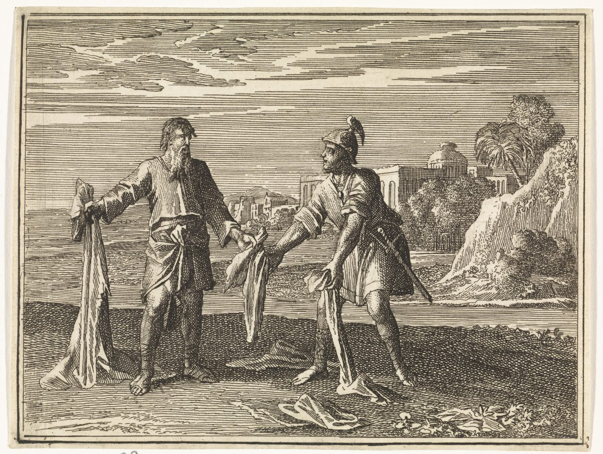

1 Kings 11 — The Mister Translation

1 Kings 11:29–31. The title is translated from the museum’s. The verses say that the two men were alone in the field, that the cloak was new, and that Ahijah tore it into twelve pieces and told Jeroboam to take ten. They do not say what either man wore, or that Jeroboam was armed, and the engraver shows a city close by where the verse says only ‘in the field’.

Translator's Notes — verse by verse
“Loved”. “King Solomon loved many foreign women”: it is the verb of the sentence that opened his reign, “Solomon loved Jehovah” (1 Kings 3:3, now on these pages). The last chapter closed on Hittite kings buying horses (1 Kings 10:29, now on these pages), and Hittite women are the last of this list. The NWT 1984 has “foreign wives”, the Geneva “outlandish women”, the Douay “strange women”, and the TLB reduces them to “many other girls”.
“To these Solomon clung”. The words Jehovah “had said” are not a quotation of one verse. They gather Deuteronomy 7:3–4, “he will turn your son away from following me”, and Joshua 23:12, “cling to the remnant of these nations” (both now on these pages). “Clung” is davaq, the verb of a man and his wife (Genesis 2:24) and of Ruth and Naomi (Ruth 1:14, both now on these pages), and of what the law asks Israel to do with Jehovah. The NWT 1984 has “clung”; the Geneva has “join in love”; the NIV “held fast to them in love”; and the TLB drops the verb, “Yet Solomon did it anyway”.
The numbers, and the law of the king. “Seven hundred wives, princesses, and three hundred concubines”: this is the item the last chapter left open. Deuteronomy said the king “shall not multiply wives for himself, so that his heart does not turn aside” (Deuteronomy 17:17, now on these pages), and here the narrator states the result in two verses running. The KJV and the ASV have “turned away his heart”, the NWT 1984 “gradually inclined his heart”, and the NIV “led him astray”. Nehemiah later draws the lesson by name: “even him did the foreign women cause to sin” (Nehemiah 13:26).
A heart not whole. “His heart was not whole with Jehovah his God”: the phrase stands in four verses of the Hebrew Bible. The first is what Solomon himself told the assembly when the house was finished, “let your heart be whole with Jehovah our God” (1 Kings 8:61, now on these pages). The others are this verse and two of later kings (1 Kings 15:3, 14, now on these pages). The word is shalem, whole, and it has the same letters as the beginning of his own name. The ASV and the KJV have “not perfect”, the NWT 1984 “did not prove to be complete”, and the NIV “not fully devoted”.
Filled up after Jehovah. “He did not fill up after Jehovah”: this is the idiom mille acharei. In this exact form it stands in three verses of the Hebrew Bible: two are said of Caleb (Deuteronomy 1:36; Joshua 14:14, now on these pages), and the third is this one, with “not”. The KJV has “went not fully after”, the NWT 1984 “did not follow Jehovah fully”, and the NIV “did not follow the Lord completely”.
Four gods, and no word for “goddess”. “Ashtoreth, the god of the Sidonians”: Hebrew has no separate word here, only elohei, “god of”. The KJV, the NWT 1984 and the NIV supply “goddess”, which is what she was; the Geneva keeps “the god”. The others are called shiqquts, “detestable thing”, the narrator’s word and not their worshipers’. Verse 33 calls all three “god”. Milcom and Molech are close in spelling and the versions blur them: at verse 5 the NIV has “Molek” and the Douay “Moloch” where the Hebrew has Milcom. At verse 33 the Greek Bible has “their king” for Milcom, which is what the same letters can mean. Solomon’s first sentence on the high places was a caution (1 Kings 3:3); now he builds one. “The mountain that is before Jerusalem” is unnamed; the TLB supplies “the Mount of Olives” and the NIV “a hill east of Jerusalem”. The later book calls it “the mount of corruption”, when Josiah tears these places down (2 Kings 23:13).
Twice. “Who had appeared to him twice”: at Gibeon (1 Kings 3:5) and after the house was finished (1 Kings 9:2, both now on these pages). The second time carried the warning this verse recalls: “if you turn away … and you go and serve other gods” (1 Kings 9:6). The narrator counts them.
“I will surely tear”. Qaroa eqra, the verb doubled, stands in one verse of the Hebrew Bible. The verb has a history. When Saul seized Samuel’s robe “it tore”, and Samuel said, “Jehovah has torn the kingdom of Israel from you today” (1 Samuel 15:27–28, now on these pages). This page keeps “tear” through the chapter, so that the same word joins the sentence here to the cloak in verse 30. The KJV, the ASV and the NIV have “rend” or “tear”, the NWT 1984 “rip”. “To your servant”: the Hebrew is plain; the NIV softens it to “one of your subordinates”, and the TLB hides it in “someone else”. Verse 26 will name the servant.
Two “onlys”. Verses 12 and 13 each begin with a limit: not in your days, and not all of it. Both are for David’s sake, and the second adds Jerusalem. It is the promise of 2 Samuel 7:15 (now on these pages), “my kindness shall not depart from him, as I removed it from Saul”, working inside the sentence. The one tribe is not named here.
“There is no adversary”. “Jehovah raised up an adversary against Solomon”: the word is satan, here a human enemy and not a name. Solomon had told Hiram, “there is no adversary, and no evil occurrence” (1 Kings 5:18, now on these pages). That sentence is now answered three times, in verses 14, 23 and 25. The KJV, the ASV and the NIV have “adversary”, and the NWT 1984 “resister”.
Hadad, and an old war. The story reaches back to 2 Samuel 8:14 (now on these pages), which says only that David set garrisons in Edom. This passage adds the six months and “every male”. Verse 17 spells the name Adad and then Hadad in the same sentence, and this page prints each as it stands. The KJV and the ASV print “Hadad” throughout. The TLB makes the dead “some Israeli soldiers”, which the Hebrew does not say. He marries into Pharaoh’s house as Solomon did (1 Kings 3:1, now on these pages), and his son grows up among the sons of Pharaoh. His exchange with Pharaoh, “what do you lack?”, “Nothing; only, send me away”, is all the motive the verse gives.
Rezon, and the first king of Damascus. “Rezon son of Eliada”: he fled Hadadezer, the king David beat (2 Samuel 8:3, now on these pages). “When David killed them”: the Hebrew “them” has no noun before it, and the KJV and the ASV supply “of Zobah”. “Raiding band” is gedud; the NIV has “a band of men”. The same two men appear here because each was left over from a victory of David’s. Solomon inherits his father’s wars.
Aram, or Edom? “And he loathed Israel, and reigned over Aram”: Hebrew resh and dalet are nearly the same letter, and ארם, Aram, and אדם, Edom, differ by that stroke. The Greek Bible ends the sentence “reigned in Edom”, and makes Hadad the subject. The middle of the verse is also rough: the Hebrew has “and the evil which Hadad” with no verb, and the versions repair it. The KJV has “beside the mischief that Hadad did”, the NWT 1984 “along with the injury that Hadad did”, and the Douay “this is the evil of Adad”. This page prints Aram, with Damascus in the verse before.
The servant. “A servant of Solomon”: this is the “servant” of verse 11. The verse gives him a father, a town, a mother and a tribe, and his mother’s name, Zeruah, stands in one verse of the Hebrew Bible. “He too lifted his hand against the king”: the verse says “too”, placing him after Hadad and Rezon, and then spends two verses explaining and never describes the act. The NIV has “he rebelled against the king”; the KJV keeps “lifted up his hand”.
The Millo, and the burden of Joseph. “Solomon built the Millo”: this was planted at 1 Kings 9:15 and 9:24 (now on these pages). The NIV has “the terraces”, the NWT 1984 “the Mound”, and the TLB “Fort Millo”. “A mighty man of valor” is the title of Boaz (Ruth 2:1, now on these pages). The word for the “burden” he oversees is sevel, from the verb of those “who carried burdens” (1 Kings 5:29, now on these pages), and “the burden of the house of Joseph” stands in one verse of the Hebrew Bible. The KJV has “all the charge of the house of Joseph”, the ASV “all the labor”, the NIV “the whole labor force”, and the NWT 1984 “all the compulsory service”. The narrator had said “of the children of Israel Solomon made no slave” (1 Kings 9:22, now on these pages). Here Solomon puts an Ephraimite in charge of Joseph’s burden, and the next chapter shows what the tribes think of it.
The cloak and the name. “He was covered with a new cloak”: the word is salmah, and in a Hebrew text without vowels it is written שלמה, the same four letters as Shelomoh, Solomon. A translation cannot show that, and the Hebrew does not comment on it. What the reader sees is a prophet alone in a field tearing שלמה in pieces, and then saying, “I am tearing the kingdom from the hand of Solomon”. The ASV and the KJV have “garment”, the NIV “cloak”, and the TLB “robe”.
Ten and one, out of twelve. “Twelve pieces”, “ten pieces”, “the one tribe”: the Hebrew accounts for eleven. It says “one” in three verses (13, 32 and 36) and never explains the twelfth piece. The Greek Bible does the sum at two of those places, “two sceptres” at verses 32 and 36, and keeps “one” at verse 13. The shelf follows the Hebrew: the NWT 1984 has “the one tribe”, the NIV “he will have one tribe”, and the Douay “one tribe shall remain to him”. This page prints what the Hebrew has and leaves the piece unaccounted for.
“They” have forsaken me. “Because they have forsaken me … and they have not walked in my ways”: the Hebrew verbs in verse 33 are plural, though the sentence ends “like David his father”, which is singular and can mean only Solomon. The Greek Bible has “he” throughout. The ASV and the KJV keep “they”, and the NIV has “they have forsaken me”. This page prints the plural, and lets the sentence be as uneven as it is. “Ashtoreth the god of the Sidonians, Chemosh the god of Moab, Milcom the god of the children of Ammon”: here Jehovah calls them gods, without the narrator’s “detestable thing”.
A lamp for David. “That there may be a lamp for David my servant all the days”: the word is nir, a spelling of ner. Meaning “lamp”, it stands in four verses of the Hebrew Bible, all of them about David’s line: this one, 1 Kings 15:4 (now on these pages), 2 Kings 8:19 and 2 Chronicles 21:7 (neither of those translated here yet). David’s men had called him “the lamp of Israel” (2 Samuel 21:17, now on these pages). The ASV and the NWT 1984 have “a lamp”, the KJV “a light”, the NIV “a lamp”, and the TLB drops the picture, “so that the descendants of David will continue to reign”.
A faithful house, offered to the wrong family. “I will build you a faithful house, as I built for David”: the phrase bayit neeman stands in three verses of the Hebrew Bible. One is promised to a priest (1 Samuel 2:35), one is Abigail’s word to David (1 Samuel 25:28, both now on these pages), and the third is this one, offered on the same terms to Jeroboam: “if you listen”. The same “if” was set before Solomon (1 Kings 9:4, now on these pages).
“Only not all the days”. “And I will humble the seed of David for this, only not all the days”: the Hebrew is lo khol ha-yamim. The ASV, the KJV and the Douay have “not for ever”, the NIV “but not forever”, and the NWT 1984 “only not always”. “For ever” claims more than the words do: they promise that the humbling has an end, and do not say when. The Greek text used here has no such verse.
Shishak. “Jeroboam arose and fled to Egypt, to Shishak king of Egypt”: the name stands in six verses of the Hebrew Bible, and in the order of the books he is the first king of Egypt to be given a name at all; every Pharaoh until now, Solomon’s father-in-law included, has been only “Pharaoh”. He is usually identified with Sheshonq I, an identification from outside the text. The verse makes no comment on the change, but Egypt has gone from giving Solomon a wife to sheltering both of his enemies, Hadad and now Jeroboam. He will come back with an army (1 Kings 14:25, now on these pages).
A book we do not have. “The book of the acts of Solomon” stands in one verse of the Hebrew Bible, this one. The word for “acts” is devarim, “words” or “matters”, the word of the queen’s report (1 Kings 10:6, now on these pages). The Douay has “the book of the words of the days of Solomon”, the NIV “the book of the annals of Solomon”, and the NWT 1984 “the book of the affairs of Solomon”. It is the first such citation in Kings, and the narrator is telling the reader that this account is a selection. Note what the verse keeps: “and his wisdom”.
Forty years. “Forty years”, the same figure as David’s (1 Kings 2:11, now on these pages). “Solomon lay down with his fathers”, as David did (1 Kings 2:10). The last sentence names the son in whose hand the tearing will happen.
Patterns worth carrying forward
Where this translation keeps the words exact and distinct: “clung” for davaq; “whole” for shalem, as in 1 Kings 8:61; “fill up after” for mille acharei, as in Joshua 14:14; “the god of” for elohei, with no “goddess”; “detestable thing” for shiqquts; “tear” for qara, in the sentence and in the cloak; “adversary” for satan, as in 1 Kings 5:18; “Adad” at verse 17 and “Hadad” elsewhere, as written; “the Millo”; “burden” for sevel; “cloak” for salmah; “they have forsaken me”, plural; “lamp” for nir; “a faithful house” for bayit neeman, as in 1 Samuel 25:28; and “not all the days” for lo khol ha-yamim.
Echoes paid. Solomon who loved Jehovah (1 Kings 3:3); the law of the king (Deuteronomy 17:17); the marriages forbidden (Deuteronomy 7:3–4; Joshua 23:12); clinging (Genesis 2:24; Ruth 1:14); the heart whole with Jehovah (1 Kings 8:61); Caleb who filled up after Jehovah (Deuteronomy 1:36; Joshua 14:14); the two appearances and the warning (1 Kings 3:5; 9:2, 6); the kingdom torn from Saul (1 Samuel 15:27–28); the kindness not removed (2 Samuel 7:15); “there is no adversary” (1 Kings 5:18); David’s war in Edom and Hadadezer (2 Samuel 8:3, 14); Pharaoh’s daughter (1 Kings 3:1); the Millo (1 Kings 9:15, 24); those who carried burdens and “no slave” (1 Kings 5:29; 9:22); the lamp of Israel (2 Samuel 21:17); the faithful house (1 Samuel 2:35; 25:28); the “if” (1 Kings 9:4); and the forty years and the lying down (1 Kings 2:10–11).
Echoes planted. Rehoboam, Jeroboam and the burden of the house of Joseph (1 Kings 12); the lamp, and hearts not whole (1 Kings 15:3–4, 14, now on these pages; 2 Kings 8:19; 2 Chronicles 21:7); Shishak at Jerusalem (1 Kings 14:25, now on these pages); the high places of Solomon torn down by Josiah (2 Kings 23:13); and Nehemiah’s lesson (Nehemiah 13:26). The rest are yet to come in this translation.
Next in this book: 1 Kings 12 — all Israel comes to Shechem to make Rehoboam king and asks him to lighten the yoke; he takes the young men’s advice over the old men’s; ten tribes answer “What share have we in David?”; and Jeroboam, king in the north, sets up two calves of gold at Bethel and Dan.